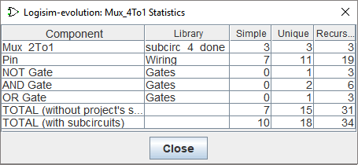

项目菜单
- 添加电路...
-
将新电路添加到当前项目中。 Logisim-evolution 将坚持要求您为新电路命名。 该名称不得与项目中的任何现有电路相匹配。
- 添加 VHDL 实体...
-
--
- 导入 VHDL 实体...
-
--
- 加载库
- 卸载库...
-
从项目中卸载当前库。 Logisim-evolution 不允许您卸载当前正在使用的任何库，包括包含出现在任何项目电路中的组件的库，以及带有出现在工具栏中或映射到鼠标的工具的库。
- 向上移动电路
-
将当前显示的电路在项目内的电路列表中向上移动一级，如资源管理器窗格中所示。
- 向下移动电路
-
将当前显示的电路在项目内的电路列表中向下移动一级，如资源管理器窗格中所示。
- 设为主电路
-
将当前显示的电路设置为项目的主电路。如果当前电路已经是项目的主电路，则此菜单项将变灰。 主电路的唯一意义在于它是打开项目文件时首先出现的电路。
- 删除电路
-
从项目中删除当前显示的电路。 Logisim-evolution 将阻止您删除用作子电路的电路，并且将阻止您删除项目中的最终电路。
- 恢复默认外观
-
如果您编辑了电路的外观，此菜单项会将外观恢复为默认值。 仅当编辑电路外观时才启用该菜单项。 可以通过库的使用新框布局属性更改默认外观。
- 编辑电路布局
-
允许您编辑组件布局的开关，这决定了电路的工作方式。 该菜单项通常被禁用，因为您通常会编辑布局。
- 编辑电路外观
-
允许您编辑电路在另一个电路中用作子电路时的表示方式的开关。 但此菜单选项允许您为子电路绘制不同的外观。
- 分析电路
-
注意： 在当前版本的 logisim-evolution 中默认禁用此菜单。 它可以通过命令行选项重新激活。
计算与当前电路相对应的真值表和布尔表达式，并将其显示在组合分析窗口中。 分析过程仅对组合电路有效。 组合分析部分描述了分析过程的完整描述。 - 获取电路统计数据
-
显示一个对话框，其中包含有关当前查看的电路所使用的组件的统计信息。 该对话框包括一个包含五列的表格：

- 组件：组件的名称。
- 库：组件所在库的名称。
- 简单：该组件直接出现在所查看电路中的次数。
- 唯一：该组件出现在电路层次结构中的次数，其中层次结构中的每个子电路仅计算一次。
- 递归：组件出现在电路层次结构中的次数，其中我们计算每个子电路在层次结构中出现的次数。
“唯一”和“递归”之间的区别最容易解释，通过考虑使用三个 2:1 多路复用器构建的 4:1 多路复用器，如使用子电路 部分。 2:1 多路复用器包含两个 AND 门（4:1 电路不包含任何 AND 门），因此 AND 门的“唯一”计数将为 2； 但如果您要使用此图构建 4:1 多路复用器，则实际上三个 2:1 多路复用器中的每一个都需要 2 个与门，因此“递归”计数为 6。
如果您使用加载的 Logisim-evolution 库中的电路，这些组件将被视为
黑匣子
：库电路的内容不包含在唯一和递归计数中。 - 选项...
-
打开项目选项窗口。
下一步： 模拟菜单。